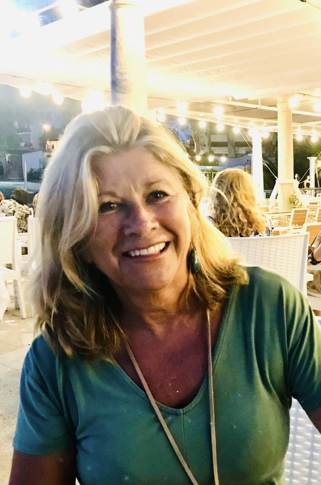

Hola, Soy Lourdes
Yo creo OBRAS y experiencias con mis videos

Mezcla de colores y el juego con el agua.
El utilizar diferentes meteriales y crear nuevas composiciones me parece fascinante, como materiales sin vida proipia adquieren un sentido magico en una obra.
Crear texturas, hacer veladuras con distintos colores acrilicos incluso mezclando pigmento aporta a mis obras un toque muy especial y personal.
Licenciada en Psicología en las universidades de Málaga y Granada, dando un giro profesional a mi vida, ejercí como empresaria del mundo de la decoración dirigiendo un departamento de interiorismo, para una gran empresa dedicada a la creación, promoción, construcción y decoración de inmuebles; y esa inquietud por la creatividad y la belleza me ha llevado a desarrollar mi capacidad para la pintura; y de forma autodidacta me dedico a pintar y a diversas actividades manuales, llegando a emplear mi tiempo y vocación al arte, formándome a través de talleres, cursos, visitando galerías, ferias de arte y llegando a la conclusión de que este mundo de la expresividad artística es la que disfruto y empleo el maximo de mi capacidad, con gran ilusión. Trabajo la acuarela y diversas técnicas mixtas así como trabajos de collage, y continuamente investigando y creando.

juego de formas en la composicion de rectangulos de diferentes tamaños, y siempre utilizando la mezcla idonea de colores y jugando con las veladures, a su vez mezclando acuarelas y acrilicos.
Miralo en InstagramJuego de figuras geometricas con acrilicos y tinta china.
Miralo en Instagram